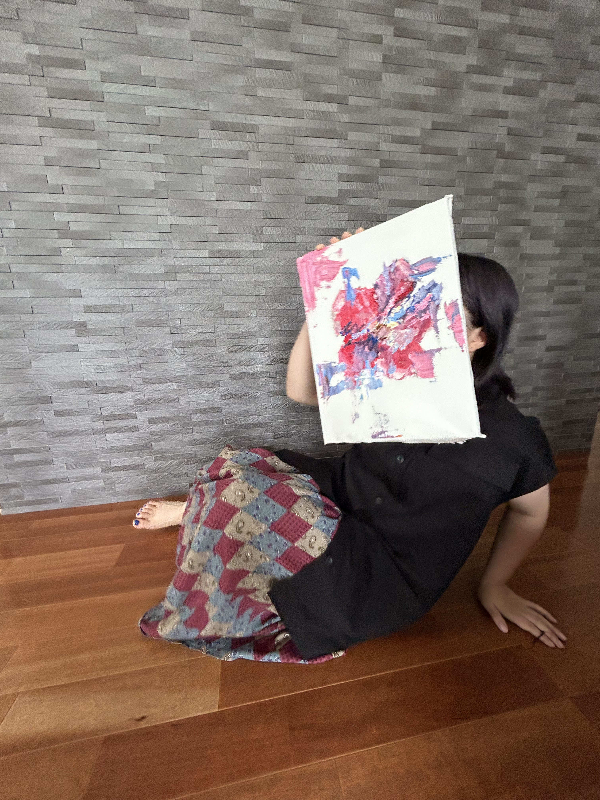

マロマロキノコ

私について
油絵画家を目指していました。
今はプログラマーになりたいです。
プロフィーーール
マロマロキノコ
湘南住み
デザインは得意
できること
日常生活
食べる、寝る
バイト
塾講師、住宅展示場の受付
過去のバイト
ラーメン屋、学童保育、カフェ
持っている資格
古物商許可証
Works
これまでしてきた（いる）こと
KAZEFILMS 選出
amiami 所属
作ったLINEスタンプ
最近作ったスタンプ
過去に作ったスタンプ
私の歴史
睡眠時間の変化について
2005 年
この世に生まれる、20時間くらい寝る
2016 年
中学受験塾の宿題が終わらず3,4時間寝る
2025 年
特に何もないが10時間寝る